Dopo essere sceso dal Cuel di Lanis da Sud, per quella che io chiamo forse impropriamente cengia Sud, mi rimaneva la curiosità di percorrere quella traccia segnata tutto'ora sulla Tabacco che s'inoltra nel gran canalone Sud (rio Drignizza) compreso fra il Cuel di Lanis e il Laschiplas. Bincolato più volte da Udine, m'impensieriva un po' l'uscita in forcella, ma la consultazione delle Carte Tecniche Regionali mi ha rassicurato.
Qualche tempo dopo, sfogliando la Guida delle Prealpi Carniche del Marinelli, ecco comparire una relazione della traversata della cresta del Cuel di Lanis proprio per il canalone che avevo in mente, segno che un tempo era un percorso frequentato. Non mi è chiaro il percorso iniziale, bisognerebbe procurarsi la carta del Marinelli.

Il sentiero della Lopata, recentemente sistemato, pulito e segnato con enorme lavoro personale di Tiziano Cher, è davvero bello e rilassante da percorrere.
Il percorso del Marinelli non inizia da qui, giacché questa mulattiera, come quella del rio Gleria, è stata realizzata negli anni '60 del secolo scorso per i lavori di rimboschimento (non soddisfacenti a detta dei valligiani - a differenza del rimboschimento attuato sull'Ambruseit sopra Gemona).
Dal punto in cui finisce detto sentiero, in quella spalla lì in foto, inizia una traccia in direzione del canalone. Inizialmente titubante (la Tabacco riporta tale traccia più in alta), mi sono subito convinto fosse quella giusta.
L'ambiente è suggestivo, con bella vista sulla pianura; qualche passaggio richiede un minimo di attenzione.
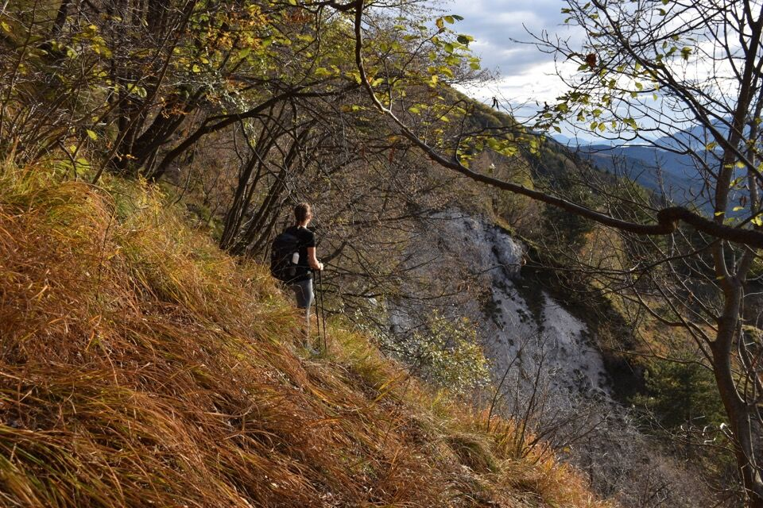Eccoci finalmente all'interno del gran canalone Sud; la parte più bassa, invasa dalla vegetazione, crea qualche minimo problema di orientamento.
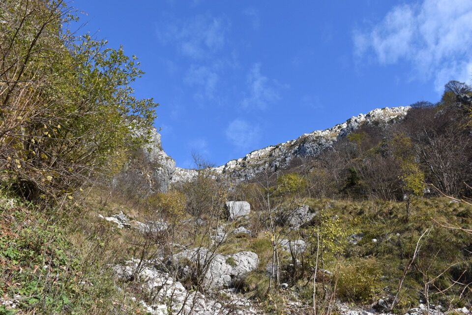Il cimitero di Pers.
La parte finale del canalone, ormai prossimi alla forcella fra Cuel di Lanis e Laschiplas.
Il canalone s'impenna e qualche passaggio molto ripido su erba ci ha consigliato di calzare i ramponi. Mica vorrai andare in questi posti senza portarti i ramponi?
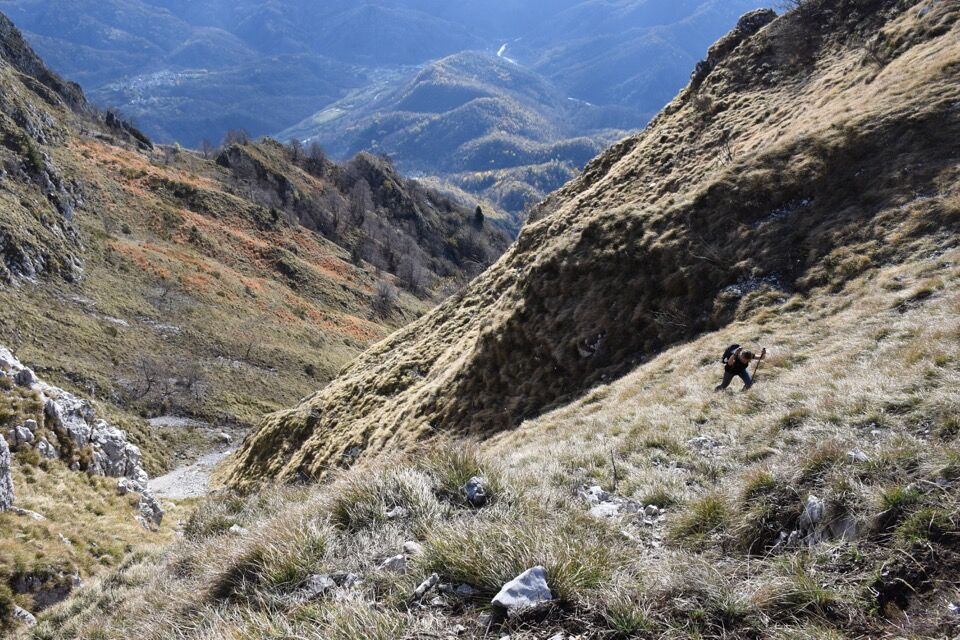La cresta Ovest del Laschiplas: ricordo un calvario immane quando la percorsi anni fa; ora la traccia è stata ben tagliata fra i mughi e invasa di bollini rossi.
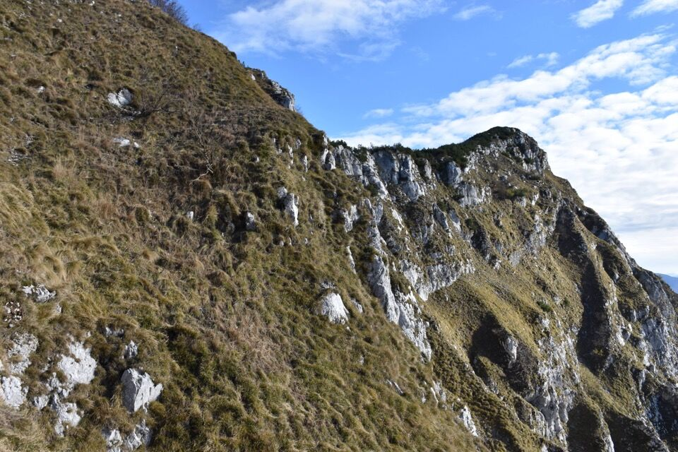Il Cuarnan, e sotto il ripido canale diretto per il Cuel di Lanis, che so essere pure percorribile.
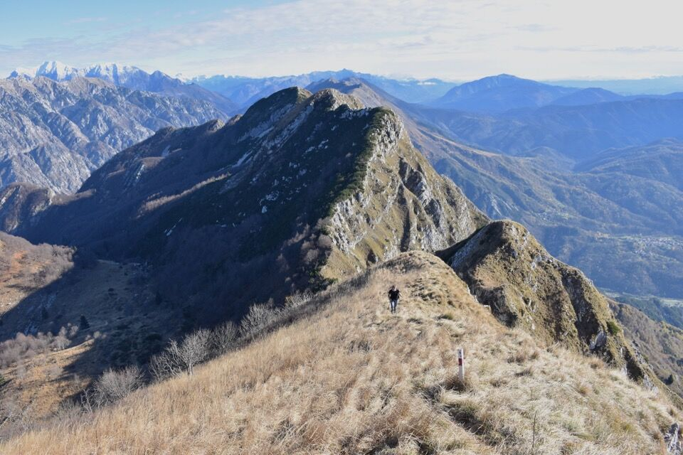Dalla cima verso i Musi: il canalone in centro foto è quello del rio Zeleni, per dove passava la via normale fino a qualche decennio fa (notizia di A. Armellini).
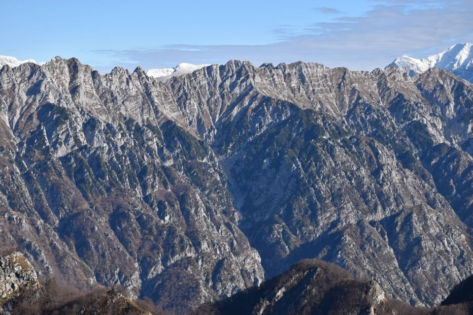La prosecuzione della cresta verso il Cjampòn, di cui percorreremo oggi una parte per poi tornare a Pers.
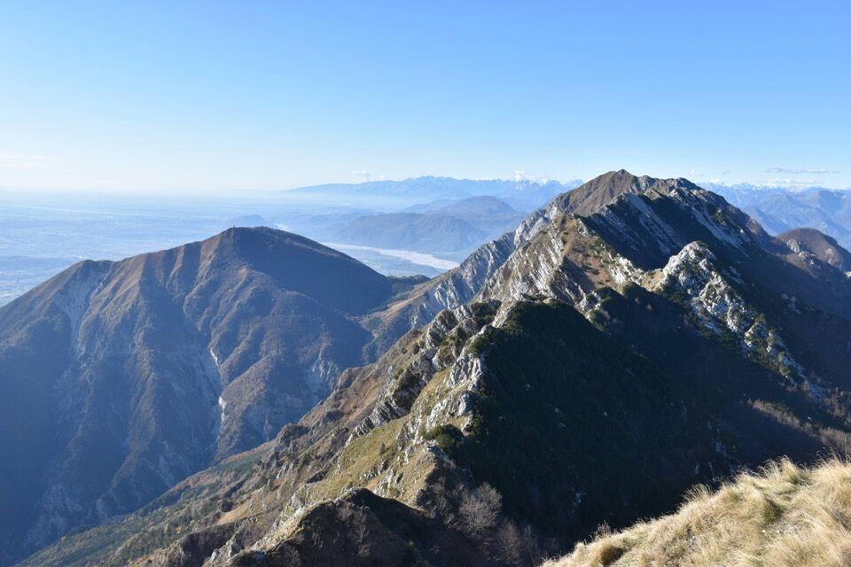Verso Piciàt e Verzegnis, con le dolomiti d'Oltrepiave in fondo.
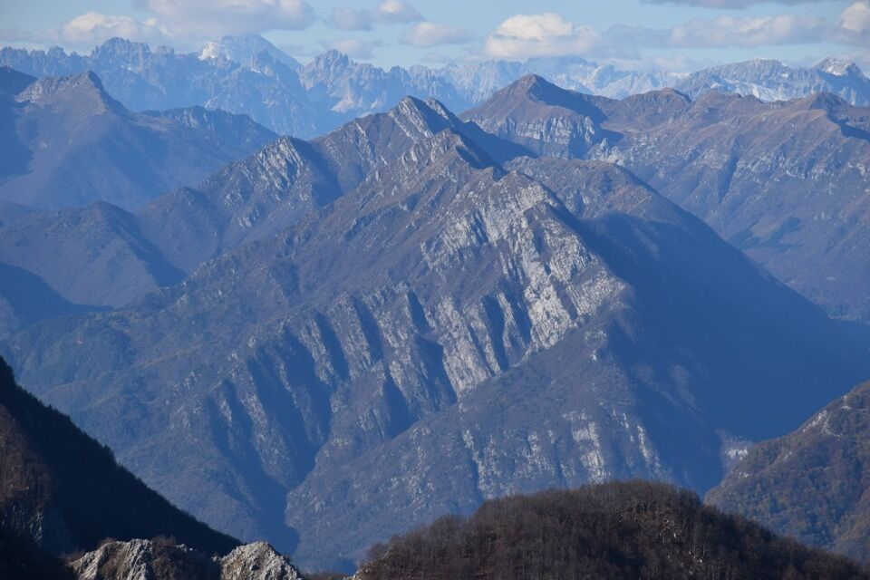L'esposto tratto dell'Alta Via CAI Gemona che traversa i pendii meridionali sottostanti al Cuel di Lanis - una volta l'Alta Via saliva al Cuel di Lanis da Ovest direttamente per cresta per un ripidissimo canalino, poi è stato realizzato il traverso sotto la cima.
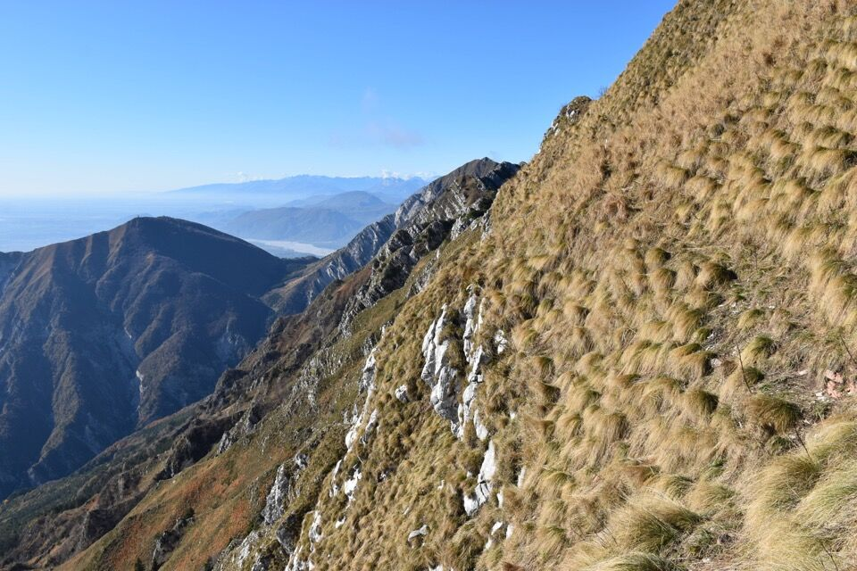 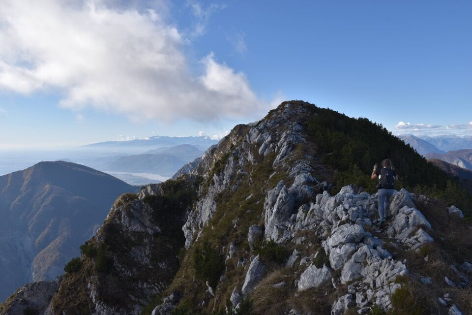Per me il tratto sul cengione sotto la Siroche Gjaline è uno dei più pittoreschi dell'intera Alta Via CAI Gemona.
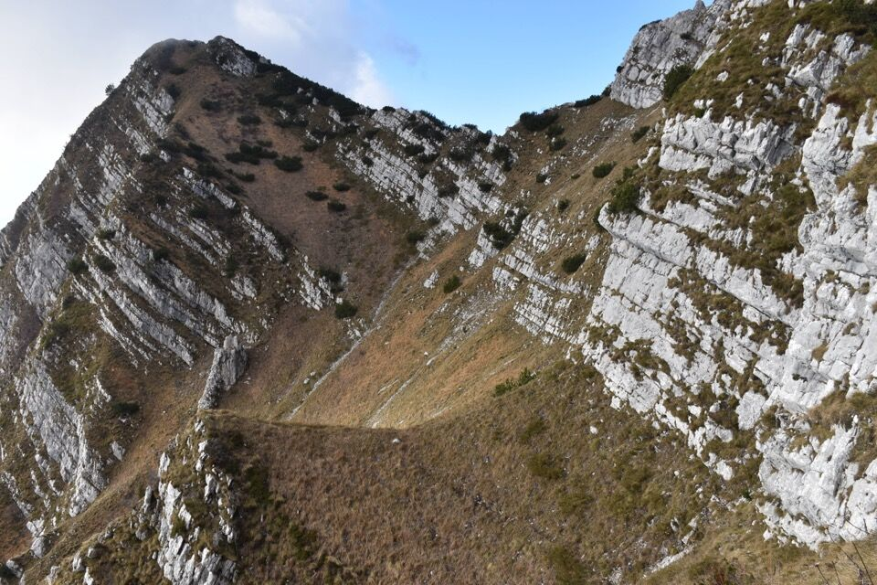Siccome c'è tempo, approfitto per salire sulla Siroche Gjaline che nessuno sale mai; intanto Lisa comincia a scendere con calma e pazienza per i pendii a Sud seguendo il rio Gleria.
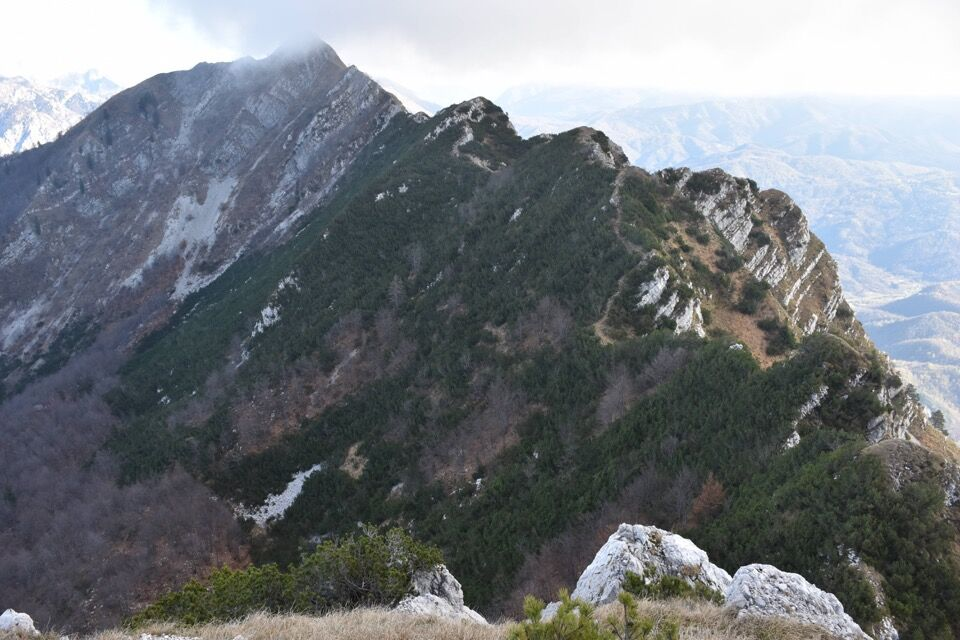Giù dret par dret verso Pers, fino ad intersecare il sentiero del rio Gleria che ci riporta alla partenza.
Nulla di che, ma nel complesso un giro di grande soddisfazione; la limpidissima giornata novembrina ha dato quel quid in più.